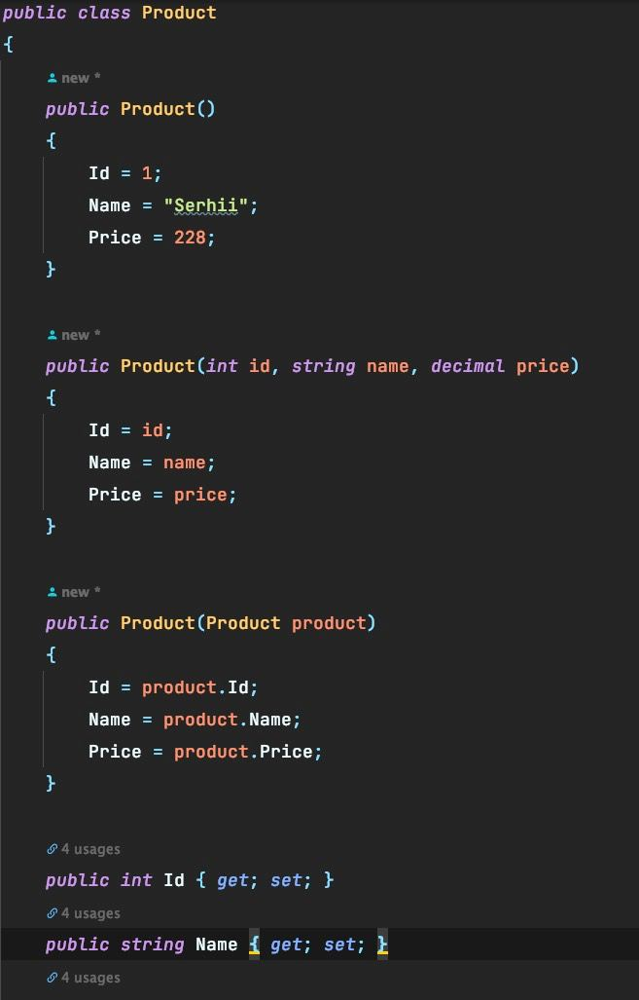
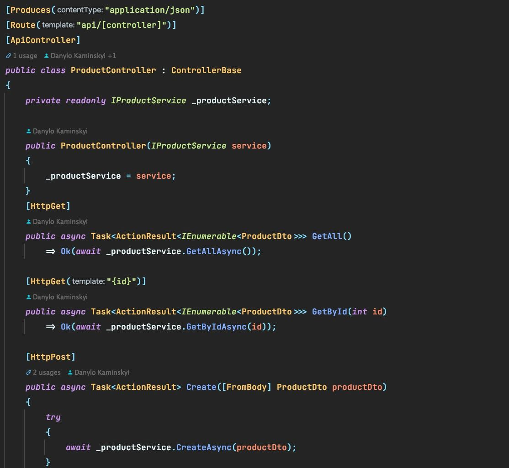
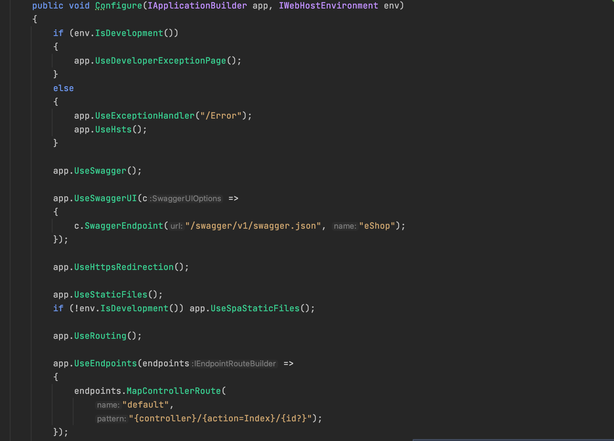
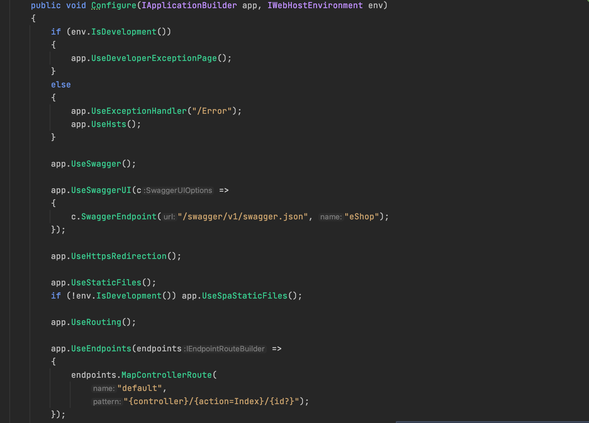

Тема: КОНСТРУКТОРИ.МОДИФИКАТОРИ ДОСТУПУ В C# И UML. ДІАГРАМИ КЛАСІВ. ВІДНОШЕННЯ МІЖ КЛАСАМИ
Мета: Здійснити об’єктно-орієнтоване проектування з урахуванням модифікаторів доступу в C# и UML і добавлення конструкторів у діаграму класів та реалізація їх у програмному коді. Вивчити особливості використання різних видів конструкторів. Доповнити програму конструкторами різних видів
- Постановка задачі:
- 1. Доповнити інтерфейси та реалізації класів методами-конструкторами класів (використати конструктори по умовчанню, ініціалізації (введення значень з клавіатури, завдання їх за виразами та через виклик інших методів-членів класу).
- 2. Протестувати програму, демонструючи послідовність викликів конструкторів виведенням на екран повідомлень про створення об’єктів
-
- 3. Продемонструвати створення об’єктів за допомогою різних видів конструкторів:
- 3.1. через ініціалізацію значень атрибутів класів списком аргументів, використовуючи конструктор ініціалізації;
- 3.2. через присвоєння одних об’єктів іншим того самого типу, використовуючи конструктор копіювання;
- 3.3. створення об’єкта за допомогою конструктора за замовчуванням.
Наведемо доповнену діаграму класів нашого застосунку

Наведемо таблицю атрибутів класів нашого застосунку
| Класс | Атрибут | Призначення атрибуту |
| Customer | Name | Збереження імені покупця |
| Customer | Збереження Email адреси покупця | |
| Product | Name | Збереження назви костюму |
| Product | Description | Збереження опису костюму |
| Product | Price | Збереження ціни костюму |
| Product | Category | Збереження категорії костюму |
| Category | Name | Збереження назви категорії |
| Category | Description | Збереження опису категорії |
| Category | Products | Збереження костюмів одної категорії |
Наведемо таблицю методів класів нашого застосунку
| Класс | Метод | Опис методу |
| User | Create() | Створює нового користувача |
| User | GetAll() | Повертаю всіх користувачів |
| User | GetById(int id) | Повертає унікальний ID з DTO |
| User | Update(User user) | Дозволяє змінити дані користувача |
| User | Delete(User user) | Використовується для того, щоб видалити користувача |
| Category | Create() | Створює нову категорію |
| Category | GetAll() | Повертаю всі категорії |
| Category | GetById(int id) | Повертає унікальний ID з DTO |
| Category | Update(Category category) | Дозволяє змінити дані категорії |
| Category | Delete(Category category) | Використовується для того, щоб видалити категорію |
| Product | Create() | Створює новий костюм |
| Product | GetAll() | Повертаю всіх костюми |
| Product | GetById(int id) | Повертає унікальний ID з DTO |
| Product | Update(Product product) | Дозволяє змінити дані костюму |
| Product | Delete(Product product) | Використовується для того, щоб видалити костюм |
Файлова структура проекту


Програмні коди з конструкторами
Код классу Product з конструкторами
Код классу Service з конструкторами

Код классу Controller з конструкторами
Код классу Program

Код классу StartUp
 

Папка з проектом
Завантажити папку з проектомЗапуск ехе-файла
Завантажити програмуВисновки
В цій лабораторній роботі ми здійснити об’єктно-орієнтоване проектування з урахуванням модифікаторів доступу в C# и UML і добавлення конструкторів у діаграму класів та реалізація їх у програмному коді. Вивчити особливості використання різних видів конструкторів. Доповнити програму конструкторами різних видів.
Також ми доповнили інтерфейси та реалізації класів методами-конструкторами класів (використати конструктори по умовчанню, ініціалізації (введення значень з клавіатури, завдання їх за виразами та через виклик інших методів-членів класу), та протестували програму, демонструючи послідовність викликів конструкторів виведенням на екран повідомлень про створення об’єктів.